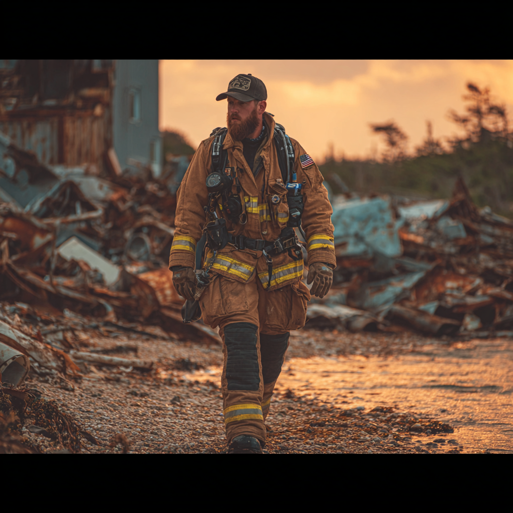

PITTSBURGH INCIDENT
12 dagar instängd i övergiven tunnel under Pittsburgh. Robert Chen dog. Sam överlevde. Något annat var där nere med dem i mörkret. Delta Green rekryterade Sam direkt efter - han hade sett för mycket för att låtas vara. Official PA-TF1 rapport säger "16 timmar." Det är en lögn.
"We all die alone, brother. But not today."

INCIDENT RAPPORT: PITTSBURGH
KLASSIFICERING: DELTA GREEN EYES ONLY
REKRYTERINGSINCIDENT - SAMUEL NOVAK
8-20 MARS 2022
ÖVERSIKT
| Incident: | Tunnelkollaps, North Side, Pittsburgh, PA |
| Datum: | 8-20 mars 2022 (12 dagar) |
| Plats: | Gammalt översvämningskontrollsystem (byggd 1936) |
| Instängda: | Sam Novak (USAR), Robert Chen (USAR) |
| Överlevande: | 1 (Novak) |
| KIA: | 1 (Chen, dag 11) |
| Officiell rapport: | 16 timmar instängd |
| Verklig tid: | 12 dagar (288 timmar) |
| Anomalous elements: | KLASSIFICERAT |
⚠ KLASSIFICERAD INFORMATION
Denna rapport innehåller information som avviker från officiell PA-TF1/FEMA dokumentation. Distribution begränsad till Delta Green operatives med clearance.
Officiell täckhistoria: "16 timmar instängd, räddade genom sekundär access, Chen DOA från trauma."
OFFICIELL RAPPORT (PA-TF1)
PA-TF1 Incident Report #2022-031
Datum: 8 mars 2022
Sammanfattning:
0930 hours: Pennsylvania Task Force 1 deployed till North Side collapse site efter rapporter om strukturell kollaps i gammalt tunnelsystem. Två byggnader sjönk 3 meter. Sexton civila instängda.
1030 hours: Rescue team 1 (Specialists Novak och Chen) entered collapsed structure via western access point för att nå instängda civila.
1045 hours: Strukturell failure trappade team i subsection C-4. Radio contact förlorad.
1100-0200 hours: Continuous rescue attempts. Multiple entry points attempted. Heavy machinery deployed för debris removal.
0230 hours (dag 2): Contact re-established via sekundär access tunnel. Extrication commenced.
0430 hours: Båda team members extraherade. Chen DOA (trauma och hypotermi). Novak critical but stable. Sexton civila extraherade successfully via alternativ route.
Officiell förklaring: Rescue team 1 var instängda i 16 timmar under extremt svåra förhållanden. Chen dog av trauma sustained during initial collapse och hypotermi. Novak överlevde genom kombinat ion of training, physical condition, och tur.
Denna förklaring är medicinskt osannolik men accepterad av alla parter.
KLASSIFICERAD RAPPORT (DELTA GREEN)
VERKLIGHETEN
Baserat på Novak's debriefing (juni 2022), forensic analysis, och medical records:
Faktisk tid instängd: 12 dagar (288 timmar)
Varför Lögnen?
12 dagar utan mat eller vatten under dessa förhållanden är medicinskt omöjligt för överlevnad. Novak's condition vid rescue – svår dehydration, hypotermi, men levande och (relativt) alert – stämmer inte med 12-dagars deprivation.
Frågor som officiell rapport inte kunde svara:
- Hur överlevde Novak utan vatten i 12 dagar?
- Varför hittades de 200 meter från initial collapse site?
- Vad orsakade Chen's infection? (Vatten var kallt – bakteriell growth osannolik)
- Varför tog det 12 dagar att hitta dem när rescue efforts var "continuous"?
- Vad förklarar Novak's auditory/visual experiences i mörkret?
Linda Fermorinzo's Statement (PA-TF1 Chief, retired):
"Om vi säger 12 dagar kommer folk fråga frågor vi inte kan svara. Hur överlevde han? Varför hittade vi dem där när all räddningsinsats var riktad åt andra hållet? Varför... Det finns saker som inte går att förklara. För din skull, för Roberts minne – 16 timmar."
Anomalous Elements
Novak's Account (Debriefing, juni 2022):
- Dag 7-9: Ljud från djupare i tunneln – "plaskande men rytmiskt, som fotsteg i vatten"
- Dag 10: Visual contact med något – "former i mörkret, vått, inte mänskligt"
- Dag 10: Chen bekräftade: "You see them too?" – båda såg något
- Dag 11-12: Efter Chen's död fortsatte ljud och rörelse närmare Novak's position
- Dag 12: Novak förlorade medvetande, hittades av rescue team
Assessment: Möjlig kontakt med subterranean entities. Novak's överlevnad osannolik utan external intervention eller anomalous environmental factors. Rekommenderat för recruitment baserat på:
- Exponering för anomalous phenomena
- Överlevnad mot odds
- USAR-färdigheter värdefulla för DG operations
- Psykologisk profile: pragmatisk, misstror "officiella förklaringar"
DETALJERAD TIDSLINJE (12 DAGAR)
Novak och Chen går in i kollapsad struktur via western access. Vattnet står till midjan (kallt smältvatten). De hör rop från instängda civila bakom total collapse av tunnelvalv.
"Vi måste gå under," säger Chen. De går djupare in i tunnelsystemet.
10:50: Strukturen kollapsar bakom dem. De är instängda.
Novak och Chen hittar luftficka – gammal servicetunnel där taket fortfarande håller. Vattnet stabiliseras vid bröstdjup. De har:
- Battery-powered lights (begränsad tid)
- Radio (ingen signal)
- Basic first aid kit
- Energy bars (3 dagar vid rationering)
De hör rescue teams ovanför – borrning, grävning. Men ljudet blir aldrig närmare.
"They'll get through," säger Chen. "We just need to wait."
Batterierna börjar dö. Mörkret blir tjockare. De kan fortfarande höra rescue teams, men mindre ofta. Novak frågar: "Varför tar det så lång tid?"
Chen säger ingenting. De båda vet svaret: De letar på fel ställe.
Energy bars tar slut. Vattnet är för smutsigt att dricka säkert. De rationerar sista flaskan rent vatten.
Chen's vänster fot – skadad under kollapsen – börjar bli infekterad. Han hade försökt gömma det, men nu kan han knappt stå. Novak försöker rengöra såret med first aid supplies, men i kallt smutsigt vatten är det meningslöst.
De båda vet: Utan antibiotika, i denna miljö, har Chen dagar.
"Don't give me that look," säger Chen. "I've been on borrowed time since Kandahar anyway."
Sista batterierna dör. Fullständigt mörker. Sam och Robert sitter i vatten till bröstet och pratar. Om allt. Om ingenting. Om Robert's familj i Taiwan. Om Sam's dotter Sandra. Om det faktum att de kommer dö här.
"We all die alone," säger Robert. "I was wrong earlier. We're dying together, brother."
DAG 8, sent: Novak hör ljud från djupare i tunneln. Inte vatten. Inte strukturella skift. Plaskande. Rytmiskt. Som fotsteg i vatten. Närmare.
Han ropar: "Är någon där? USAR! Vi behöver hjälp!"
Ljudet stannar. Sedan fortsätter det. Närmare.
Robert blir febrigt förvirrad, pratar med folk som inte finns. Novak håller honom ovanför vattnet.
Novak tänder sin sista emergency glow stick – svag grön glöd räcker tre meter. Tunneln sträcker sig bortom i komplett mörker.
Något rör sig i mörkret.
Han såg det inte tydligt. Han är inte säker på om han såg det alls. Men han såg något:
- Form. Eller flera.
- Vått. Inte mänskligt, men inte heller djur.
- Rörande sig. Mot dem.
Robert vaknar till clarity för ett kort ögonblick, ser Novak's ansikte.
"You see them too?"
"Yeah."
"Good. Thought I was just hallucinating."
Robert Chen dog vid ungefär 03:00, baserat på Novak's bästa gissning. Han slutade andas. Novak höll honom tills kroppen blev kall.
Sedan satte han Robert försiktigt mot tunnelväggen, ovanför vattenytan, och sa en bön han inte trodde på.
Sam var ensam.
Ljuden fortsatte. Närmare. Han hörde andning – vått, skrapigt, fel. Han stängde ögonen och väntade på att dö.
Men det gjorde han inte.
02:00: Räddningsteam bryter igenom från serviceåtkomst två nivåer ner. De hittade Novak medvetslös, svårt uttorkad, hypoterm. De hittade Chen död.
Note från rescue log: "Found both subjects 200m from initial collapse site in service tunnel not indicated on city maps. Novak unresponsive. Chen deceased, estimated TOD 24-36 hours prior."
Novak vaknade på sjukhuset tre dagar senare.
EFTERFÖLJD & REKRYTERING
Medicinsk Rapport
Conemaugh Memorial Medical Center, 23 mars 2022
Patient: Samuel Novak, 33 år
Condition upon admission:
- Svår dehydration
- Hypotermi (core temp 32°C vid rescue)
- Malnutrition (consistent med flera dagars deprivation)
- Minor lacerations och contusions
- Psychological trauma
Assessment: Condition consistent med flera dagars deprivation, inte 16 timmar. Patient's överlevnad remarkable given reported timeline.
Psykologisk Utvärdering
PA-TF1 Mandatory Psych Eval, april 2022
Novak presenterade med symptoms consistent med PTSD: intrusive memories, hypervigilance, sleep disturbances. Han rapporterade auditory experiences (Robert Chen's röst) som han described som "normal grief response."
Cleared för active duty med rekommendation om follow-up terapi.
Note: Novak ljög genom hela utvärderingen. Standard practice.
Delta Green Kontakt
Två personer knackade på Novak's dörr i Philadelphia. Federal ID, ingen specifik department. Novak släppte in dem för han var för trött för att argumentera.
"Mr. Novak, vi behöver prata om vad som hände i Pittsburgh."
"Det står i rapporten."
"Vi har läst rapporten. Vi vet också att den är bullshit."
De berättade att det fanns en organisation – inofficiell, hemlig – som hanterade saker som inte borde existera men gör det. De sa att hans färdigheter gjorde honom värdefull. De sa att det inte var ett officiellt jobb.
"Varför skulle jag göra det?"
"För att du redan vet sanningen: Vår värld är inte den enda. Och de andra vill inte oss väl. Någon måste skydda folk. Det är upp till oss. Små människor som gör det smutsiga arbetet."
Sam tänkte på Robert. På ljuden i mörkret. På det faktum att ingen officiell myndighet skulle erkänna vad som verkligen hände.
"OK. Vad vill ni att jag ska göra?"
"Vänta på vårt samtal."
Nuläge (2025)
Sam Novak har nu varit Delta Green operative i 3 år. Han har sett 6 operationer (2 riktiga, 4 false flags). Han har förlorat 10 SAN-poäng sedan Pittsburgh (återställt ~10 genom tid).
Han "pratar" fortfarande med Robert. Han vet att det inte är riktigt. Men det hjälper.
Varje gång larmet ljuder – USAR eller Delta Green – går han in. För det är vad han gör. Han räddar folk från mörkret.
Även om mörkret aldrig helt lämnar honom.
"We all die alone. But not today."
— Robert Chen (1979-2022)